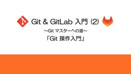
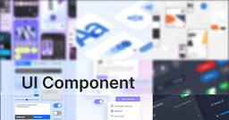

SIOS Tech. Lab
https://tech-lab.sios.jp
サイオステクノロジーのエンジニアが クラウド、OSS、認証に関する様々な情報を提供します。
フィード

Git & GitLab 入門 (2) ～Git マスターへの道～「Git操作入門」 1
1
SIOS Tech. Lab
はじめに Git & GitLab入門ブログ Gitマスターへの道の第2回です。前回の「Gitの基本とGitLab / GitHubについて」では、Gitの基本を解説しました。 今回は、ローカルPCにGit、VS ...Git & GitLab 入門 (2) ～Git マスターへの道～「Git操作入門」 first appeared on SIOS Tech. Lab.
1日前

そのUIどう呼ぶ？チームの認識を揃えるためのコンポーネント名称整理
SIOS Tech. Lab
Material Designをはじめとして、グラフィカルユーザーインターフェース（GUI）のデザインシステムは数多く公開されています。 各デザインシステムに含まれるUIコンポーネントは、各ブランドやサービスに最適化され ...そのUIどう呼ぶ？チームの認識を揃えるためのコンポーネント名称整理 first appeared on SIOS Tech. Lab.
2日前

知っておくとちょっと便利！systemd.timer によるタスク管理1
SIOS Tech. Lab
今号では、systemd.timer について、その仕組みや設定方法について説明します！ 前回と前々回の記事では cron についてご紹介したので、cron の代替として位置づけられている systemd.timer に ...知っておくとちょっと便利！systemd.timer によるタスク管理1 first appeared on SIOS Tech. Lab.
4日前

【2025年7月】OSSサポートエンジニアが気になった！OSS最新ニュース
SIOS Tech. Lab
こんにちは！ 今月も「OSSのサポートエンジニアが気になった！OSSの最新ニュース」をお届けします。 Linux 環境でよく使用される sudo において、影響度の高い脆弱性 (CVE-2025-32463) が報告され ...【2025年7月】OSSサポートエンジニアが気になった！OSS最新ニュース first appeared on SIOS Tech. Lab.
4日前
Streamlit本番環境Docker構築ガイド｜セキュリティ設定分離完全対応
SIOS Tech. Lab
挨拶 ども！お久しぶりです。Claudeを活用した開発手法の模索に真剣に取り組んでいる龍ちゃんです。 合間でStreamlitアプリの開発もちょこちょこやっているんですが、前回は「DevContainerでStreaml ...Streamlit本番環境Docker構築ガイド｜セキュリティ設定分離完全対応 first appeared on SIOS Tech. Lab.
5日前

Claude Codeが作成する~/.claudeディレクトリの詳細解析
SIOS Tech. Lab
PS SLの佐々木です。 今回はClaude Codeを使っていてToDoリストがどのように管理されているのかやタスク完遂まで具体的にどのような作業が行われているのかを知りたく~/.claudeディレクトリを観察してみま ...Claude Codeが作成する~/.claudeディレクトリの詳細解析 first appeared on SIOS Tech. Lab.
8日前
Git & GitLab 入門 (1) ～Git マスターへの道～「Git の基本と GitLab/GitHub」
SIOS Tech. Lab
はじめに ソフトウェア開発の現場では、複数人での協業やコードの履歴管理が欠かせません。 そうした中で「バージョン管理システム」は、いまや開発の基盤ともいえる存在です。その中でも特に広く使われているのが「Git」と「Git ...Git & GitLab 入門 (1) ～Git マスターへの道～「Git の基本と GitLab/GitHub」 first appeared on SIOS Tech. Lab.
8日前
DevSecOpsとは？安全性とスピードを両立する開発手法
SIOS Tech. Lab
はじめに 近年、ソフトウェア開発の現場ではDevSecOpsというアプローチの重要性が高まっています。 DevOpsによってソフトウェア開発の効率化を実現することは浸透してきていますが、同時にサイバー攻撃も高度化・巧妙化 ...DevSecOpsとは？安全性とスピードを両立する開発手法 first appeared on SIOS Tech. Lab.
8日前
Claude×技術ブログで執筆環境が激変！次世代AI協働ワークフロー解説
SIOS Tech. Lab
挨拶 ども！7月の追い込みが激しくて、いろんなものに追い回されている龍ちゃんです。まぁすべてを引き受けたのは自分なので自己責任ですが、調子に乗っていたなと反省しています。とはいえ、割と順調に片付いているので、余裕が出てき ...Claude×技術ブログで執筆環境が激変！次世代AI協働ワークフロー解説 first appeared on SIOS Tech. Lab.
10日前
DevContainerでStreamlit開発を始める方法：Docker＋VSCode
SIOS Tech. Lab
挨拶 ども！最近はAI関連からInfrastructure as Code（IaC）などにも入門して幅広いブログを執筆している龍ちゃんです。最近はブログ執筆にAIを導入して、執筆スピードと質が上がっているような気がして楽 ...DevContainerでStreamlit開発を始める方法：Docker＋VSCode first appeared on SIOS Tech. Lab.
12日前